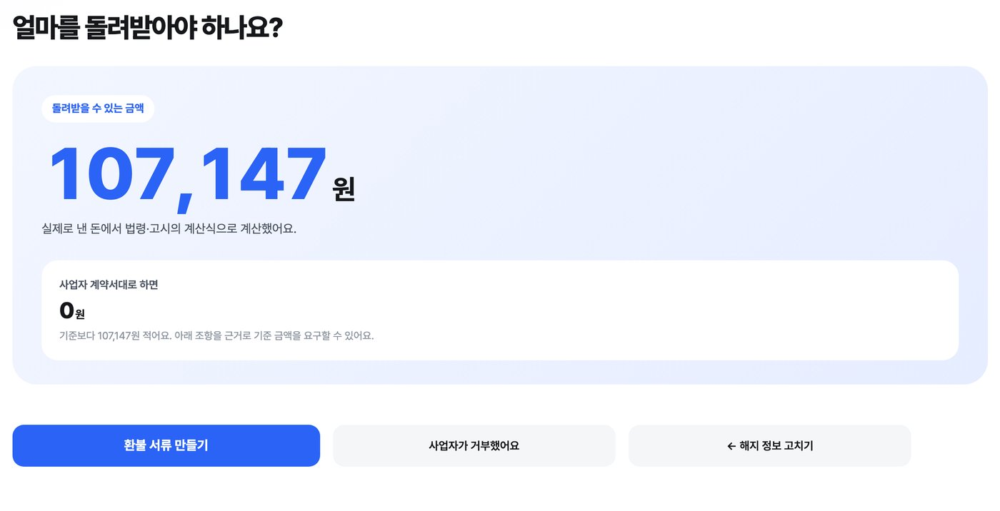
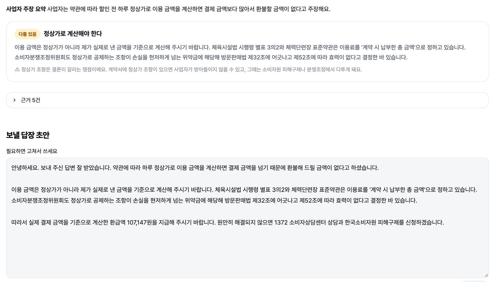
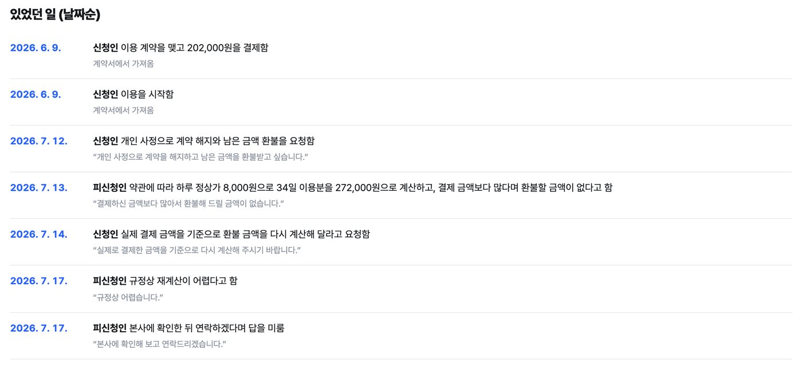
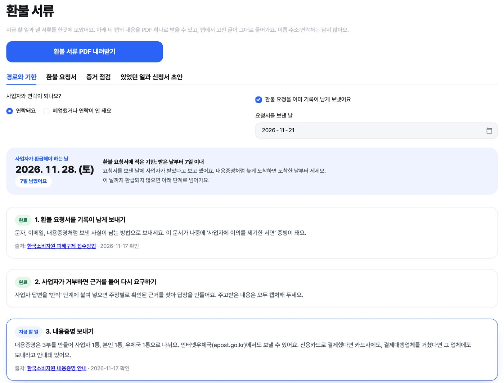
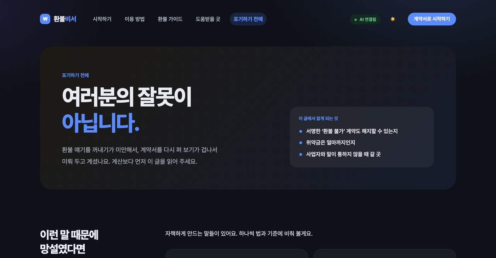

업종마다 적용되는 법이 다르고, 계약서 조항이 법정 기준과 다를 때가 많아 소비자는 얼마를 돌려받아야 하는지 혼자 알기 어렵습니다.
107,147원은 같은 금액·기간의 가상 계약서로 앱이 실제로 계산한 값입니다. 화면에서 결정문 방식(1일 단가를 먼저 버림)을 고르면 107,170원이 나와 결정 금액과 같습니다.

AI가 계약서를 읽고, 돌려받을 금액과 계약서대로 한 금액을 계산 과정·근거 조문과 함께 보여 줍니다.

사업자 답변을 주장별로 나누고, 확인된 조문만으로 보낼 답장 초안을 만듭니다.

할 일 순서 · 환불 요청서 · 1372 전화 대본 · 신청서에 옮길 글을 PDF 하나로 받습니다.
첫 번째 샘플 ‘새벽피트니스’에는 지어낸 사업자 답변과 대화가 미리 채워져 있어 따로 입력할 것이 없습니다.
LLM은 계약서를 읽고 문장을 이해하는 데 강하지만, 금액·조문처럼 틀리면 사용자가 손해를 보는 값을 매번 똑같이, 지어내지 않고 내놓는다고 보장할 수 없습니다. 그래서 AI에게는 판단을, 코드에는 금액·조문·등급을 맡겼습니다.
| 무엇을 | LLM에 그대로 맡기면 | 환불비서는 | 실제로 돌려 본 결과 |
|---|---|---|---|
| 환불 금액 | 물을 때마다 숫자가 달라질 수 있음 | 계산기 코드가 계산 | 조정 결정과 같은 107,170원 |
| 법 조문 | 없는 조문을 그럴듯하게 쓸 수 있음 | 근거 표 23건에 있는 조문만 허용 | 가짜 조문 넣으면 차단 |
| 답장 속 금액 | 계산과 다른 금액이 섞일 수 있음 | 답장의 금액을 계산 결과와 대조 | 다른 금액 넣으면 차단 |
| 있었던 일 | 없던 말이 사실처럼 섞일 수 있음 | 대화 원문에 그대로 있는 인용만 남김 | 없는 말 근거 항목 버림 |
| 조항 판정 | 무효·유효를 단정할 수 있음 | 등급은 근거 표가 정하고, 갈리면 두 금액 | 등급 = 근거 표 |
| 개인정보 | 이름·연락처가 그대로 전송될 수 있음 | 보내기 전에 코드가 가림 (글 입력) | 성명·연락처·이메일 가림 |
오른쪽 열은 앱의 ‘검증 리포트’ 화면을 열 때마다 실제로 실행되는 자가 점검 6개의 결과입니다. 가운데 열은 생길 수 있는 일을 적은 것이고, 특정 서비스를 시험해 잰 값은 아닙니다.
| 화면 | 백엔드 · 에이전트 | AI 모델 | 외부 API | 배포 |
|---|---|---|---|---|
| Streamlit 1.67.0 | Python 3.12 · Anthropic SDK 2.8.0 | Claude Opus 5.5 | Anthropic Messages API | Streamlit Community Cloud |
돈과 법이 걸린 일이라 “그럴듯한 답”보다 “틀리지 않는 답”이 중요했습니다. 만들면서 부딪힌 결정들입니다.
246/247 · 직접 만든 가상 계약서 17종 · 같은 계약서를 AI 없이 정규식으로 읽으면 84.0% (200/238)
계산 · 분류 · 화면 흐름 · AI를 부르지 않고 실행
앱의 검증 리포트 화면을 열 때마다 실행
11건은 조문 원문까지 수록, 화면에서 펼쳐 볼 수 있음
실제 호출 토큰 × 가격표 · 금액 계산·요청서·PDF는 $0
접속 한 번에 AI 20회 · 서버 전체 하루 300회
정확도는 글자가 또렷한 가상 계약서 기준이며, 실제 계약서 사진으로는 재지 않았습니다.
양식과 조항을 일부러 다르게 만든 계약서마다 정답표를 두고 15개 항목을 맞춰 봤습니다.
같은 계약서를 정규식으로 읽은 결과(84.0%)와 나란히 재, AI가 필요한 이유를 숫자로 봤습니다.
코드를 쓰지 않은 별도 검토로 찾은 문제를 고치고, 다시 생기지 않게 테스트로 남겼습니다.
결정 금액 재현, 가짜 조문·금액 차단, 없는 인용 버림, 개인정보 가림, 등급 출처를 실제로 돌립니다.
공공데이터포털 「한국소비자원_소비자 피해구제 정보」 분기 파일 10개(2024년 1분기 ~ 2026년 2분기)를 직접 센 값 · 소비자원 발표 수치 아님
5개 품목(헬스장 · 필라테스 · 요가 · 인터넷교육 · 학원·강습) 피해구제 신청
그중 신청 이유가 계약 해지·위약금 (전체 품목 평균 27.9%)
신청자 중 20·30대, 연령 확인된 신청 기준 (전체 품목 52.5%)
| 업종 | 계산 | 반박 | 환불 서류 |
|---|---|---|---|
| 헬스장·PT | ● | ● | ● |
| 요가·필라테스 | ● | ● | ● |
| 학원 | ● | − | ● |
| 온라인 강의 | ● | − | − |
학원·온라인 강의 조항의 효력 근거는 확인하지 못해 ‘미확인’으로 표시합니다.

상황에 따라 다음 단계와 기한을 날짜로 알려 줍니다.

자책하게 만드는 말들을 법과 기준에 비춰 다시 봅니다. 어두운 화면도 지원합니다.